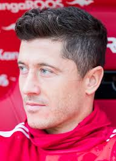

Jugadores Convocados
| Nombre | Posición | Edad | Bibliografía | Portada |
|---|---|---|---|---|
| Robert Lewandowski | Delantero | 37 | Robert Lewandowski (Varsovia, 21 de agosto de 1988) es delantero del FC Barcelona y capitán de Polonia. |  |
| Wojciech Szczęsny | Portero | 35 | Wojciech Szczęsny (Varsovia, 18 de abril de 1990) es portero de la Juventus y referente histórico de Polonia. | |
| Piotr Zieliński | Mediocampista | 31 | Piotr Zieliński (Ząbkowice Śląskie, 20 de mayo de 1994) es mediocampista del Napoli. | |
| Jakub Kiwior | Defensa | 25 | Jakub Kiwior (Tychy, 15 de febrero de 2000) es defensor del Arsenal FC. |